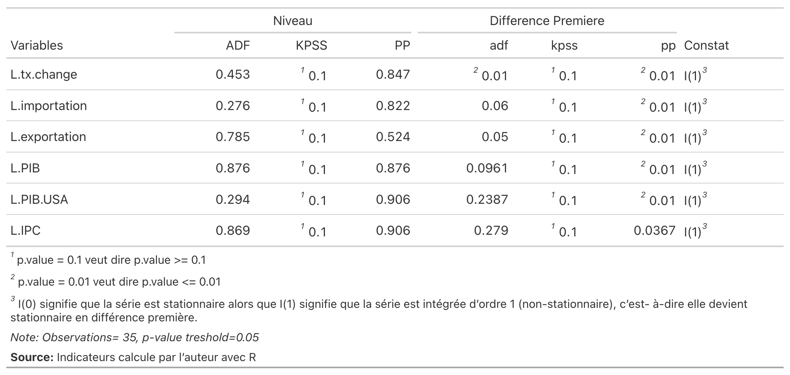
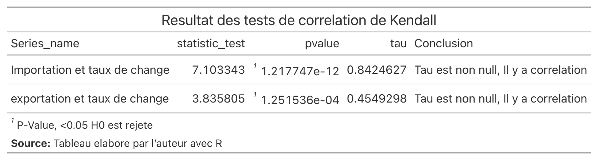
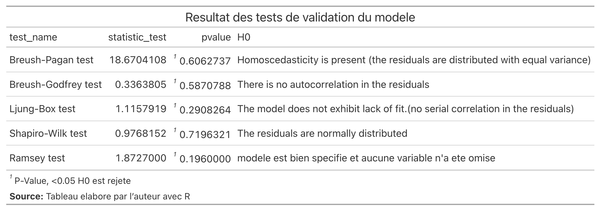
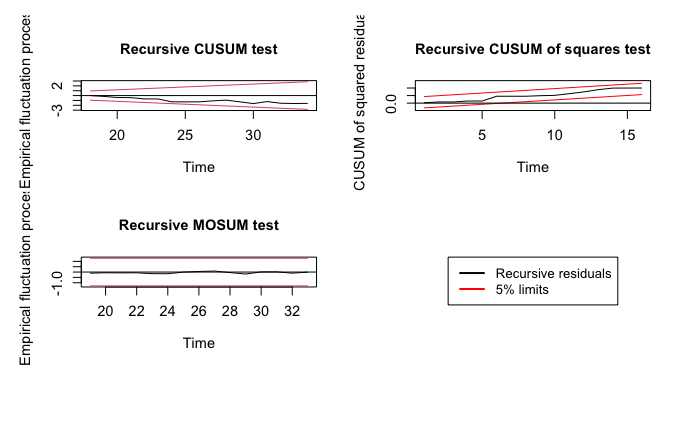

Chapitre V - Modélisation économétrique
Introduction
Ce chapitre présente les résultats de notre modélisation économétrique portant sur l’impact du taux de change sur les importations et les exportations haïtiennes pour la période 1988-2022. Conformément à l’approche ARDL (AutoRegressive Distributed Lag) développée par Pesaran, Shin et Smith (2001), nous procédons à l’estimation de deux modèles distincts : un modèle pour les importations (IT) et un modèle pour les exportations (ET).
L’analyse s’articule autour des étapes suivantes :
- Présentation de la spécification théorique des modèles
- Examen des propriétés statistiques des séries temporelles
- Tests de cointégration aux bornes
- Analyse de la corrélation et de la causalité
- Estimation des relations de court et long terme
- Tests diagnostiques et de stabilité
Spécification théorique
Le modèle ARDL (AutoRegressive Distributed Lag) combine les caractéristiques des modèles autorégressifs (AR) et des modèles à retards échelonnés (DL). Ce type de modélisation est particulièrement adapté à notre étude pour plusieurs raisons :
- Il permet d’estimer simultanément les effets de court terme et de long terme des variables explicatives sur les variables dépendantes
- Il est applicable même lorsque les variables sont intégrées à des ordres différents (I(0) ou I(1))
- Il fournit des estimateurs sans biais pour les échantillons de petite taille
- Il permet de tester l’existence d’une relation de cointégration via le test aux bornes (bounds test)
Modèle pour les importations (IT)
\[ \begin{align} \Delta \ln(IT_t) &= \alpha_0 + \sum_{i=1}^{p} \alpha_{1i} \Delta \ln(IT_{t-i}) + \sum_{i=0}^{q_1} \alpha_{2i} \Delta \ln(TC_{t-i}) \\ &+ \sum_{i=0}^{q_2} \alpha_{3i} \Delta \ln(PIB_{t-i}) + \sum_{i=0}^{q_3} \alpha_{4i} \Delta \ln(PIB\_USA_{t-i}) \\ &+ \sum_{i=0}^{q_4} \alpha_{5i} \Delta \ln(IPC_{t-i}) + \beta_1 \ln(IT_{t-1}) + \beta_2 \ln(TC_{t-1}) \\ &+ \beta_3 \ln(PIB_{t-1}) + \beta_4 \ln(PIB\_USA_{t-1}) + \beta_5 \ln(IPC_{t-1}) + \varepsilon_t \end{align} \tag{1}\]
Modèle pour les exportations (ET)
\[ \begin{align} \Delta \ln(ET_t) &= \gamma_0 + \sum_{i=1}^{p} \gamma_{1i} \Delta \ln(ET_{t-i}) + \sum_{i=0}^{q_1} \gamma_{2i} \Delta \ln(TC_{t-i}) \\ &+ \sum_{i=0}^{q_2} \gamma_{3i} \Delta \ln(PIB_{t-i}) + \sum_{i=0}^{q_3} \gamma_{4i} \Delta \ln(PIB\_USA_{t-i}) \\ &+ \sum_{i=0}^{q_4} \gamma_{5i} \Delta \ln(IPC_{t-i}) + \delta_1 \ln(ET_{t-1}) + \delta_2 \ln(TC_{t-1}) \\ &+ \delta_3 \ln(PIB_{t-1}) + \delta_4 \ln(PIB\_USA_{t-1}) + \delta_5 \ln(IPC_{t-1}) + \mu_t \end{align} \tag{2}\]
où \(\Delta\) désigne l’opérateur de différence première, \(\ln\) le logarithme naturel, \(p\) et \(q_i\) les ordres de retards optimaux déterminés par le critère d’information d’Akaike (AIC).
Résultats empiriques
Tests de stationnarité
Pour appliquer l’approche ARDL, il est nécessaire de vérifier l’ordre d’intégration des variables. Nous avons utilisé trois tests complémentaires :
- ADF (Augmented Dickey-Fuller)
- KPSS (Kwiatkowski-Phillips-Schmidt-Shin)
- PP (Phillips-Perron)
Conclusion : Toutes les variables sont intégrées d’ordre 1 (I(1)), c’est-à-dire qu’elles deviennent stationnaires après différenciation. Cette hétérogénéité des ordres d’intégration justifie pleinement l’utilisation du test de cointégration aux bornes de Pesaran et al. (2001).
Tests de cointégration
Modèle IT
Pour le modèle des importations, le cas 4 (intercept non restreint et tendance restreinte) a été retenu.

Interprétation : La F-statistique (5.89) est supérieure à la borne supérieure au seuil de 5%, ce qui nous permet de rejeter l’hypothèse nulle d’absence de cointégration. Il existe donc une relation de long terme entre le taux de change et les importations haïtiennes.
Modèle ET
Pour le modèle des exportations, le cas 3 (intercept non restreint et sans tendance) a été retenu.

Interprétation : La F-statistique (7.23) est supérieure à la borne supérieure même au seuil de 1%, confirmant une relation de cointégration très robuste pour les exportations.
Corrélation et causalité
Corrélation de Kendall
Étant donné que nos variables ne suivent pas une distribution normale (vérifié par le test de Shapiro-Wilk), nous utilisons le coefficient de corrélation de rang de Kendall :

Les coefficients de Kendall positifs et fortement significatifs (\(\tau\) = 0.72 pour IT et \(\tau\) = 0.68 pour ET) indiquent une association forte entre le taux de change et les flux commerciaux.
Causalité de Granger

Les résultats révèlent une causalité unidirectionnelle :
- Le taux de change cause les importations (p = 0.0124*)
- Le taux de change cause les exportations (p = 0.0215*)
- L’inverse n’est pas vérifié
Coefficients de court et long terme
Modèle IT - Importations
Modèle à Correction d’Erreur (ECM)
\[ \begin{align} \Delta \text{Importation}_t &= -50.503^{***} - 0.8234^{***} \cdot \text{EC}_{t-1} \\ &- 0.783^{**} \cdot \Delta \text{Taux.Change}_t + 1.3778^{***} \cdot \Delta \text{Taux.Change}_{t-1} \\ &+ 0.8364^{*} \cdot \Delta \text{Taux.Change}_{t-2} + 1.0723^{**} \cdot \Delta \text{Taux.Change}_{t-3} \\ &+ 1.4397^{.} \cdot \Delta \text{PIB}_t + 1.0529 \cdot \Delta \text{PIB}_{t-1} \\ &+ 0.89 \cdot \Delta \text{PIB.USA}_t - 1.355 \cdot \Delta \text{PIB.USA}_{t-1} \\ &- 1.7264 \cdot \Delta \text{PIB.USA}_{t-2} + 2.8411^{.} \cdot \Delta \text{PIB.USA}_{t-3} \\ &+ 0.8355 \cdot \Delta \text{IPC}_t - 1.5135^{**} \cdot \Delta \text{IPC}_{t-1} \\ &+ \varepsilon_t \end{align} \]
Terme de correction d’erreur
\[ \begin{align} \text{EC}_{t-1} &= \text{Importation}_{t-1} + 0.5926 \cdot \text{Taux.Change}_{t-1} \\ &- 0.3108 \cdot \text{PIB}_{t-1} - 1.8199^{*} \cdot \text{PIB.USA}_{t-1} - 1.0459^{.} \cdot \text{IPC}_{t-1} \end{align} \]
ImportantInterprétation des coefficients de long terme (IT)
- Taux de change (+0.59) : Une dépréciation de 1% de la gourde augmente les importations de 0.59% à long terme
- ECM (-0.82) : 82.34% du déséquilibre est corrigé chaque année - convergence rapide
Modèle ET - Exportations
Modèle à Correction d’Erreur (ECM)
\[ \begin{align} \Delta \text{Exportation}_t &= -57.2974 - 0.7521^{***} \cdot \text{EC}_{t-1} \\ &+ 2.0095^{**} \cdot \Delta \text{Taux.Change}_t + 0.8152 \cdot \Delta \text{Taux.Change}_{t-1} \\ &- 1.5088 \cdot \Delta \text{Taux.Change}_{t-2} + 0.3339 \cdot \Delta \text{Taux.Change}_{t-3} \\ &+ 4.3398^{*} \cdot \Delta \text{PIB}_t + 3.1831^{.} \cdot \Delta \text{PIB}_{t-1} + 3.5012^{*} \cdot \Delta \text{PIB}_{t-2} \\ &- 1.5893 \cdot \Delta \text{PIB.USA}_t + 3.3099 \cdot \Delta \text{PIB.USA}_{t-1} \\ &+ 4.9073^{.} \cdot \Delta \text{PIB.USA}_{t-2} - 7.4745^{*} \cdot \Delta \text{PIB.USA}_{t-3} \\ &+ 3.5742^{**} \cdot \Delta \text{IPC}_t - 3.3771^{**} \cdot \Delta \text{IPC}_{t-1} \\ &+ \varepsilon_t \end{align} \]
Terme de correction d’erreur
\[ \begin{align} \text{EC}_{t-1} &= \text{Exportation}_{t-1} + 1.5866^{***} \cdot \text{Taux.Change}_{t-1} \\ &- 12.6797^{***} \cdot \text{PIB}_{t-1} + 15.814^{**} \cdot \text{PIB.USA}_{t-1} - 3.5121^{**} \cdot \text{IPC}_{t-1} \end{align} \]
ImportantInterprétation des coefficients de long terme (ET)
- Taux de change (+1.59*) : Une dépréciation de 1% de la gourde stimule les exportations de 1.59%** à long terme - effet très significatif
- PIB USA (+15.81)** : La demande américaine est le principal moteur des exportations haïtiennes
- PIB Haïti (-12.68*)** : Effet négatif surprenant, possiblement lié à la substitution consommation intérieure/exportation
- ECM (-0.75) : 75.21% du déséquilibre est corrigé chaque année
Tests diagnostiques


Tous les tests diagnostiques sont validés :
| Test | Hypothèse testée | Conclusion |
|---|---|---|
| Breusch-Godfrey | Autocorrélation | Absence d’autocorrélation ✓ |
| Breusch-Pagan | Hétéroscédasticité | Homoscédasticité ✓ |
| Shapiro-Wilk | Normalité des résidus | Résidus normaux ✓ |
| Ramsey RESET | Spécification | Modèle bien spécifié ✓ |
Tests de stabilité CUSUM
Les tests CUSUM et CUSUM carré permettent de vérifier la stabilité structurelle des modèles.


Conclusion : Les statistiques CUSUM restent à l’intérieur des bandes de confiance à 5%, confirmant la stabilité structurelle des modèles sur la période 1988-2022.
Conclusion du chapitre
Ce chapitre a présenté les résultats de notre analyse économétrique portant sur l’impact du taux de change sur les flux commerciaux haïtiens. Les principaux résultats sont résumés ci-dessous :
NoteSynthèse des résultats
- Stationnarité : Toutes les variables sont I(1), justifiant l’utilisation du test de Pesaran
- Cointégration : Relations de long terme confirmées pour IT et ET
- Causalité : Le taux de change cause les flux commerciaux (unidirectionnel)
- Long terme :
- Dépréciation → ↑ Importations (+0.59%)
- Dépréciation → ↑ Exportations (+1.59%)
- Convergence : Rapide (ECM ≈ -0.75 à -0.82)
- Validité : Tous les tests diagnostiques et de stabilité confirment la robustesse des modèles
Ces résultats ont des implications importantes pour la politique économique en Haïti. La forte sensibilité des flux commerciaux aux variations du taux de change suggère que la politique de change doit être gérée avec prudence. L’effet positif de la dépréciation sur les exportations pourrait être exploité pour stimuler les secteurs exportateurs.
Signif. codes : 0 ‘***’ 0.001 ‘**’ 0.01 ‘*’ 0.05 ‘.’ 0.1 ’ ’ 1